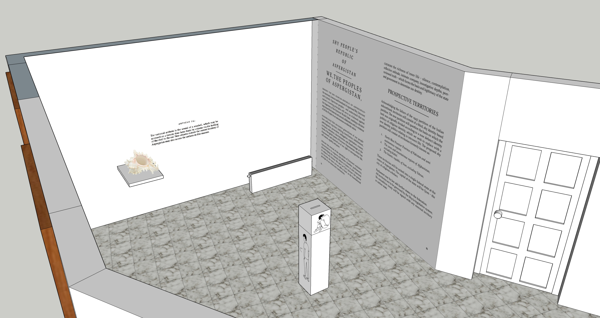
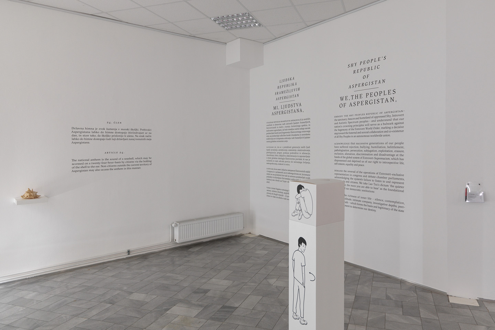
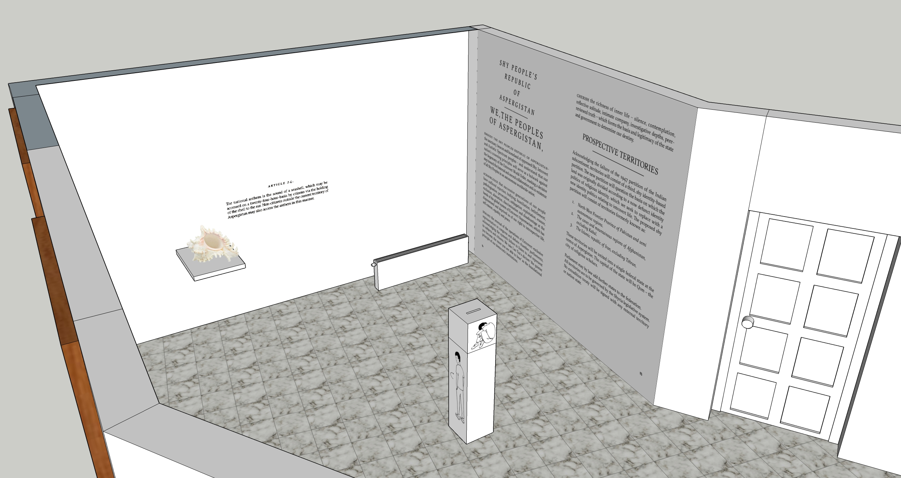
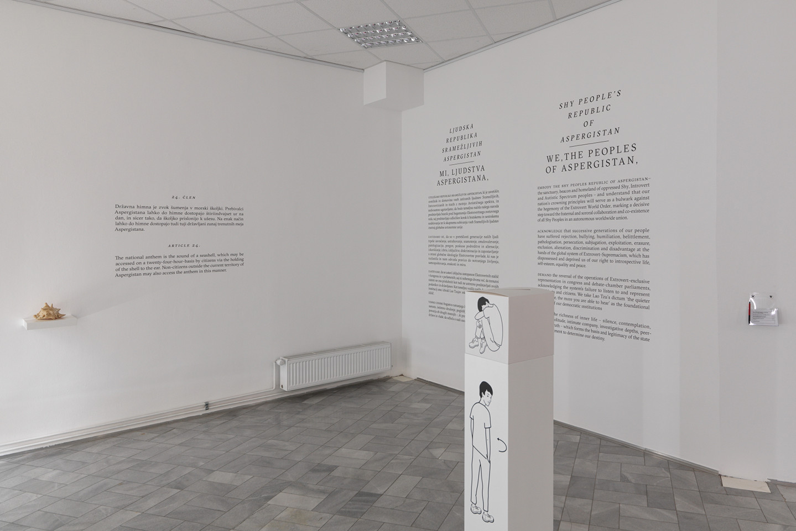
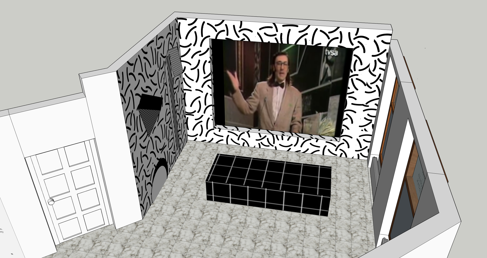
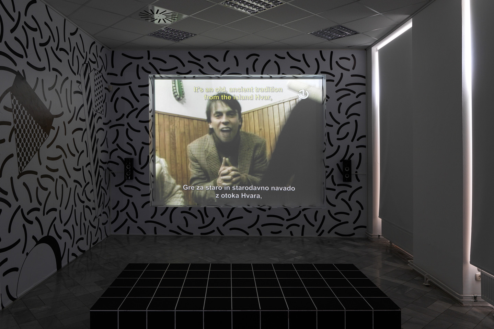

On the occasion of the 33rd edition of The Ljubljana Biennial,
Slavs and Tatars curated an exhibition focused on graphic
editions, prints, and other works on paper historically. I was in
charge to prepare the installation and production of artists'
propositions.
-> The mockups and production of Hamja Ahsan’s installation
The Aspergian Referundum related to his book
Shy Radicals.
-> The video installation of the Yugoslav comedy show Top Lista
Nadrealista retrospective, which originally ran from late 1984 to
1991.
 



The Aspergian Referundum, Hamja Ahsan – Installation view
 Top Lista Nadrealista retrospective – Installation view